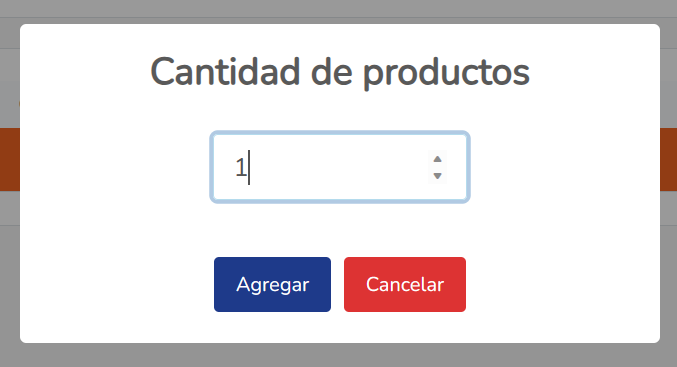
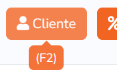
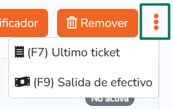

Punto de venta
Es importante que aprenda a manejar correcta y completamente el punto de venta para que pueda sacarle el mayor provecho a su sistema; pero no se preocupe, es muy sencillo e intuitivo.Ventas
Lo primero que veremos son las ventanas de venta, en esta version contamos con 3, donde puede realizar ese mismo numero de ventas simultaneas.
Despues tenemos el campo para escanear un producto y agregarlo a la venta. Puede utilizar la pistola/escaner para ingresar el código del producto o hacerlo directamente desde el teclado.
Contamos con una herramienta increible llamada asterisco (*), que puede utilizarse para modificar la cantidad de productos a agregar a la venta; si la utiliza antes del código, significará la cantidad a agregar o a restar.
Ingresar cantidades desde el escaner:
- Solo agregar el SKU agrega 1 cantidad.
- 4*SKU; agregará 4 productos a la venta.
- -3*SKU; restará 3 productos a la venta.
- 0*SKU; removerá el producto de la venta.
En la tabla de abajo apareceran los productos que se vayan agregando a la venta, en el encabezado viene el orden en el cual aparece la Información de dicho producto, pero igual los colocamos aquí:
- SKU o código de barras del producto.
- Nombre del producto
- Precio unitario del producto
- Cantidad de productos agregados a la venta
- Descuento del producto (en caso de tenerlo registrado)
- Importe total (Precio unitario X Cantidad de productos)
En el apartado de pago (la columna de la derecha en pantallas grandes, la columna de hasta abajo de pantallas pequeñas), tenemos hasta arriba información del día como fecha y hora, el número de ventana y si la venta está activa o no.
Despues tenemos la cantidad de artículos que hay en la venta (no cuenta las cantidades), es decir si hay 2 productos y de uno se vendieron 3, solo apareceran 2 artículos y no 4.
El subtotal de la venta (la suma de todos los importes de la venta).
El porcentaje de descuento que se aplicó a la venta y el descuento en dinero de la misma.
El total de la venta (subtotal - descuento).
Despues tenemos los botones de cancelar venta y cobrar.
Por último tenemos el cliente a quien va dirigida la venta (por defecto es venta de mostrador).
En la ventana de cobro tenemos hasta arriba el total a cobrar.
Posteriormente tenemos los métodos de pago. Aunque hay que aclarar que el sistema no incluye pasarela de pago ni terminal.
- Efectivo, opción por defecto.
- Tarjeta, por si su negocio cuenta con terminal.
- Transferencia, si se realizó el cobro aceptando una transferencia.
- Dinero electrónico, si su cliente cuenta con suficiente para cubrir el total de la venta.
En el campo de recibido ingresamos la cantidad recibida por el cliente; la ventana coloca por defecto el total de la venta, pero se puede modificar.
En el campo de abajo, va apareciendo el cambio a entregar al cliente. Este no se puede modificar.
Al final tenemos los botones para completar la venta, tenemos dos, uno para terminarla y no mandar la impresion del ticket; otro para terminarla y mandar el ticket.
Una vez cobrada y terminada la venta, aparecerá la ventana final con el cambio.

Tambien podemos cancelar una venta completa.
Podemos hacerlo desde la tecla F8 de nuestro teclado o dando click en el boton con el icono
Oferta a la venta
Busqueda de productos
Para buscar productos es muy sencillo, puede utilizar el atajo de teclado presionando la tecla F4 (normalmente se encuentra en la primer fila de hasta arriba de su teclado) o dando click en el boton Buscar de la fila de botones de la ventana:
Se abrirá la ventana de busqueda, donde podrá buscar los productos disponibles para venta (no apareceran los productos agotados ni removidos).
El encabezado de la tabla dice el orden de la información del producto, pero igual lo colocamos aquí:
- Nombre del producto
- Código de barras del producto
- Precio unitario
- Stock disponible
Del lado derecho de la tabla, saldrá la imágen del producto seleccionado (solo en caso de que se haya registrado una imágen).
Para agregar el producto a la venta, dicho producto debe estar remarcado de color naranja, despues debe de darle a la tecla Enter en el teclado y saldrá una ventana donde tendrá que ingresar la cantidad a agregar a la venta.
Verificador de precios
Si desea revisar o comprobar el precio de algún producto (esté disponible o no), puede realizarlo desde el verificador.
Para acceder a él puede utilizar la tecla F6 de su teclado o hacer click sobre el boton.
En la ventana del verificador tiene el campo para escanear el código del producto.
Una vez escaneado el producto, si está registrado, saldrá su nombre, seguido de su precio actual y en caso de tener descuento, aparecerá en la parte de abajo.
Tambien tiene un boton en la parte de abajo de la ventana, donde podrá agregar a la venta el producto escaneado. Una vez que le de click, saldrá una ventana para elegir la cantidad de productos a agregar.
Remover productos de la venta
Quitar productos de una venta activa es muy sencillo, tiene 3 formas de hacerlo.
- Como lo habiamos visto en el escaner, colocando 0*SKU.
- Seleccionando el producto en la tabla de ventas y presionando el boton DELETE de su teclado.
- Seleccionando el producto en la tabla de ventas y dando click en el boton Remover.
Si utilizó alguna de las dos ultimas opciones, saldrá una ventana para confirmar el producto que quiere remover. Ahí mismo puede elegir si quiere que siga preguntando o no.
Agregar cliente a la venta
Si tiene clientes registrados, puede realizar una venta al nombre de alguno.
La ventaja para ellos al hacer esto es el cashback; así es, en la configuración de su sitema puede activar el sistema de cashback y darle a sus clientes un porcentaje de la venta en cashback. Tambien puede colocarle un porcentaje de descuento al cliente para que al seleccionarlo en una venta, se agregue el descuento automaticamente.
Para abrir la ventana de busqueda y selección de clientes puede hacerlo desde la tecla F2 en su teclado o dando click en el botón Cliente.
Al abrir la ventana de clientes, tendra el campo para buscar los clientes ingresando el nombre y una vez que de enter, si hay algún cliente que coincida, apareceran en la tabla de abajo con la siguiente información:
- Nombre del cliente
- Porcentaje de descuento
- Dinero electronico conseguido debido al cashback.
En la parte de abajo tenemos dos botones, el primero para seleccionar el cliente y agregarlo a la venta; para ello, el cliente debe estar resaltado de color naranja y esto se logra haciendo click sobre el cliente en la tabla.
El otro, para remover, si hay algún cliente seleccionado, solo es cuestion de darle click y aceptar removerlo.

Agregar descuento a la venta
Sabemos que a veces es requerido realizar descuentos a las ventas, ya sean generales o con cliente seleccionado. Por eso tenemos un boton que lo hace.
Para hacerlo puede utilizar la tecla F3 de su teclado o clickear en el boton Descuento.

Puede agregar descuentos a la venta en el rango de 0.1 hasta 99.99.
Para remover el descuento de la venta, solo debe ingresar un descuento de 0 y listo.
Imprimir último ticket
Podemos tener situaciones en las cuales nos confundamos al cerrar la venta y lo hagamos sin imprimir ticket cuando el cliente lo necesitaba; o tambien puede suceder que no se nos indique que lo querían.
Entonces, para cualquier situacion en la que se requiera volver a imprimir el último ticket, agregamos un boton que puede hacerlo.
Para realizar esta acción puede hacerlo desde la tecla F7 de su teclado o dando click en los 3 puntos y despues en Ultimo ticket.
Esto nos arrojará una ventana que nos preguntará si queremos imprimir el ticket de la última venta, al aceptar, se mandará automaticamente.
Registrar salida de efectivo
Para llevar un mejor control del efectivo que hay en caja, que los cortes salgan correctos y que no haya perdidas o robo hormiga, tenemos el registro de salidas de efectivo.
Para registrar una salida, podemos hacerlo desde la tecla F9 de nuestro teclado o clickeando en los 3 puntos y despues en Salida de efectivo.
En la ventana podremos encontrar dos campos:
- Cantidad de efectivo que va a salir.
- Motivo por el cual saldrá ese efectivo.
Una vez completados esos campos, le damos en guardar y listo.

Recuperar venta no completada
Ya que el sistema es una aplicación web, cerrando el navegador se puede perder información que se esté realizando en el momento.
Si se llega a apagar la computadora, se va la luz, o simplemente cierra sin querer el navegador y tenía alguna venta activa, no se preocupe, puede recuperar su información.
Lo primero que debe hacer es abrir la aplicación nuevamente, ingresar con sus credenciales y listo, saldrá una (o varias ventanas) avisandole que alguna o algunas de las ventas no fueron completadas, si quiere recuperarlas.
Si usted da click en "Sí, cargar", los productos dentro de la venta volveran a cargarse, pero debe tener en cuenta que no se agregará cliente ni descuentos, solo cargará la información de los productos.
Por otro lado, si usted da click en "Cancelar", la información de esa venta ahora sí se perdera completamente y no podrá recuperarla.
Si usted da click fuera de la ventana o la cierra sin dar click en ningún boton, no se preocupe, puede volver a ver la ventana recargando la página con F5 desde su teclado o en el boton de recargar del navegador.